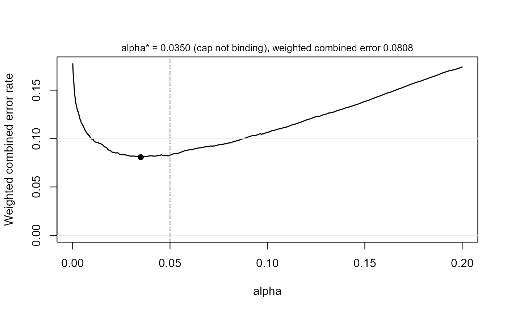

Justify the error rate: minimize or balance weighted Type I and Type II errors
Source:R/alpha.R
ape_alpha.RdChooses the claim's error rate by the decision-theoretic route of Mudge
et al. (2012) and Maier and Lakens (2022): for the design in x (its
world, claim, planning value, and sample size), the weighted combined
error rate
$$w(\alpha) = \frac{cost \cdot \alpha + prior \cdot \beta(\alpha)}{cost + prior}$$
is evaluated on a fine grid of alpha from the stored draws of one
simulation (see power_at()) and either minimized (error = "minimize") or balanced so that cost * alpha = prior * beta (error = "balance"). Here cost is the relative cost of a Type I error against
a Type II error (Cohen's 4:1 convention produces the familiar .05/.20
pair at 80% power) and prior the prior odds that the planning value
rather than the claim boundary is true. For the SESOI claims the Type I
error is the size at the claim's boundary (true effect = SESOI for the
minimum-effect claim, = +/-SESOI for equivalence), for detection the
directional size at zero; the Type II error is one minus power at the
planning value.
Arguments
- x
A
powerape_powerobject fromape_power()with stored draws.- cost
Relative cost of a Type I error against a Type II error (default 1: equally costly).
- prior
Prior odds of the planning value against the claim boundary (default 1: equally likely).
- error
"minimize"(default) the weighted combined error rate, or"balance"the cost-weighted Type I and Type II error rates.- cap
Largest admissible
alpha(default 0.05). Values above .05 warn.- size
Simulate the claim-boundary world to measure the realized error rate at the chosen
alpha(default FALSE).- nsim_size
Replications for the size simulation (default: the
nsimofx).- seed
Optional seed for the size simulation.
- xlim
Horizontal range for the plot (default: 0 to the larger of 0.2 and three times the cap).
- ...
Passed to the base plot call.
Value
A powerape_alpha object: alpha, the chosen error rate;
power, mcse, and beta at it; wcer, the weighted combined error
rate there and wcer_default at alpha = .05; range, the flat
range; capped, whether the unconstrained optimum (alpha_uncapped,
wcer_uncapped) lies above the cap; size, the realized-size
simulation when requested; grid, the full alpha/power/beta/wcer
curve; and the embedded DGP. Has print, plot, and
power_statement() methods.
Details
The cap. The search is confined to alpha <= cap, .05 by default.
Maier and Lakens (2022) argue that raising the error rate above the
conventional level requires a justification of its own (direct
decision use, a cost–benefit rationale, a low prior on the null, no
room to add data) and that journals may accept only lowering; the
function therefore reports the capped optimum and states when the
unconstrained optimum lies above the cap.
Precision. Power along the grid is a step function of the stored
draws, so the objective is flat near its optimum. The result reports,
besides the optimum, the range of error rates whose objective lies
within one Monte Carlo standard error of it; report that range, not
the point, unless nsim is large.
Realized size. With size = TRUE the function simulates the world
in which the claim sits exactly on its null boundary and reports the
realized error rate at the chosen alpha, which the analytic tools
behind compromise power analysis cannot do. On the standard routes it
matches the nominal level within Monte Carlo error; on clustered panels
with few units it may not, and then the realized number is the one to
report.
References
Maier, M., & Lakens, D. (2022). Justify your alpha: A primer on two practical approaches. Advances in Methods and Practices in Psychological Science, 5(2). Mudge, J. F., Baker, L. F., Edge, C. B., & Houlahan, J. E. (2012). Setting an optimal alpha that minimizes errors in null hypothesis significance tests. PLOS ONE, 7(2).
Examples
# \donttest{
d <- set_ape(ape_dgp(focal = pa_var("treat", "binary", p = 0.5),
covariates = list(pa_var("z", "normal")),
baseline = 0.30, signal = 0.10), 0.10)
pw <- ape_power(d, n = 2000, claim = "minimum", sesoi = 0.05,
nsim = 1000, seed = 1)
ja <- ape_alpha(pw, cost = 4, prior = 1) # Cohen's 4:1 weighting
ja
#> powerape justified alpha -- minimum-effect claim (CI lower bound > 0.050), n = 2000, nsim = 1000
#> objective: minimize the weighted combined error rate (Type I cost x4, prior odds H1:H0 = 1)
#> alpha* = 0.0350 -> power 0.736 (MCSE 0.014), beta 0.264, weighted combined error 0.0808
#> at alpha = 0.05: power 0.786, weighted combined error 0.0828
#> flat range: alpha in [0.0255, 0.0500] is indistinguishable from the optimum at this nsim
#> cap 0.050 not binding (unconstrained optimum 0.0350)
plot(ja)

power_statement(ja)
#> We chose the error rate for the minimum-effect claim (the 93% confidence
#> interval's lower bound exceeding the smallest effect size of interest, 0.050;
#> a one-sided test at alpha = 3.5%) by minimizing the weighted combined Type I
#> and Type II error rate (Maier & Lakens, 2022; Mudge et al., 2012), weighting
#> a Type I error 4 times a Type II error and taking prior odds of 1 for the
#> planning value (APE = 0.100) against the claim boundary, using the powerape
#> package (version 1.10.0). The assumed data-generating process was a probit
#> model with focal variable treat (binary, prevalence 0.50); parametric
#> covariates (z; Gaussian-copula dependence); baseline outcome rate 0.300 with
#> the focal at reference; nuisance covariates contribute a latent
#> pseudo-R-squared of 0.10. At n = 2000 the optimum within the conventional cap
#> of alpha = 0.05 was alpha = 0.0350: simulated power 0.736 (Monte Carlo SE
#> 0.014; 1000 replications), a Type II error rate of 0.264, and a weighted
#> combined error rate of 0.0808 versus 0.0828 at alpha = 0.05; error rates
#> between 0.0255 and 0.0500 are indistinguishable from the optimum at this
#> precision.
# }